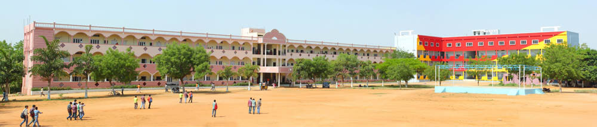

About Indur Institute of Engineering and Technology Origin of INDURiet
Indur Institute of Engineering & Technology,is a brainchild of INDUR
Educational Society. The society was founded in 1988 with a dresm to
establish and nurture institutions of excellence offering value based and
quality education in Management, Arts, Science, Engineering and
Technology. The society has so far established institutions of higher
learning at Bodhan in Nizamabad District of Telangana to conduct courses
in Computer Science, Education and Vocational Training. All these
institutions have recorded excellent academic performance and are
relentlessly striving to stand of crowd.
Quality Education & Experiential
Learning Indur Institute of Engineering & Technology, Siddipet is an
independent educational establishment of excellence, geared up in its
entirety to transform individuals into top notch intellects by imparting
top technical education. Our unwavering commitment to Quality Education
and Experiential learning ensure that our students develop the abilities
for creative& innovative thoughts with critical thinking. Pursing the
Philosophy Pursuing the philosophy of continuous learning, the Institution
prepares the students to score creditably in the Academic Sessions and
also encourages them to develop skills & attitudes to approach life with
confidence.
The working environment is such that Students as well as
Faculty members are inspired & supported to attain high standards of
Education Indur Institute of Engineering & Technology, the jewel in the
crown of Indur Education Society was established in 2001 with approval
from AICTE and affiliated to JNTU. IIET has grown leaps and bounds over
the last few years with infrastructure growing to cater to an intake of
576 students in 2008-2009 from a meager 220 in 2001. Student Strength The
student strength of the college is more than 5400. The college has about
130 well qualified and experienced faculty supported by 50 non-teaching
staff. There is a spacious accommodation with imposing structures housing
various departments .The College has grown from strength to strength over
the past 16 years and has carved a niche in the field of Technical
education. Discipline & Code of Conduct Discipline is synonymous of the
IIET tradition. Every care is taken to maintain an ideal discipline and to
make it a primary part of our work culture. We believe that nothing
sustentative can be achieved without a true spirit of discipline. In fact,
our academic environment is nurtured on discipline. This happens to be the
fore-most trait to enable us to impart quality education and to produce
meritorious results. The entire code of conduct requires an absolute sense
of obedience and subordination to the Department Head and the Faculty
concerned. However, any act of indiscipline, misconduct or irresponsible
behavior will invite strict disciplinary action, including expulsion from
the College.
Application Oriented Center
The most important part of
learning is to assimilate the knowledge effectively and then to put it to
right application. ? IIET aims at developing an Application Oriented
Centre of excellence ? For postgraduate education and research and a world
class R&D centre ? An institution par excellence in consultancy and
industry-Institute Interaction ? Teaching Learning Process is very
effective and unparalleled. ? IIET aims to attain the status of deemed
University by 2022